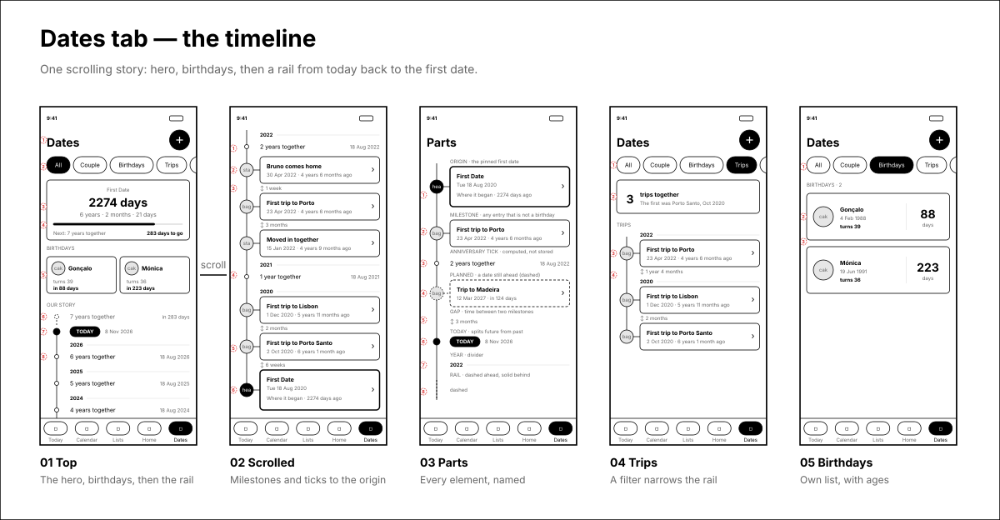
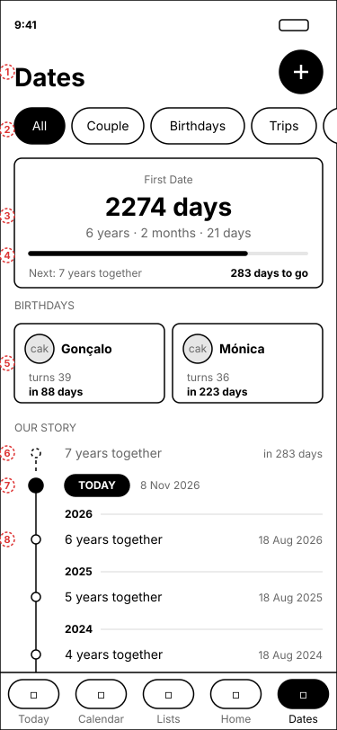
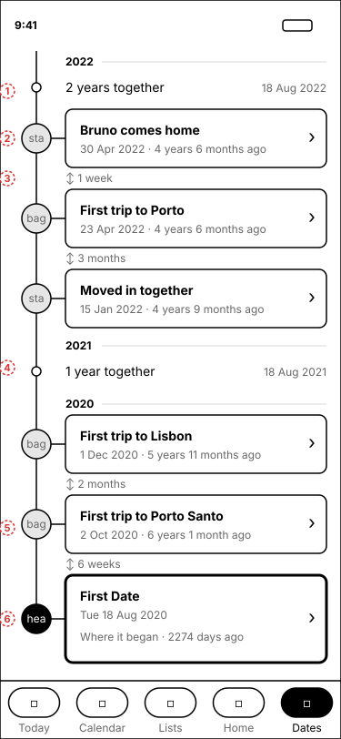
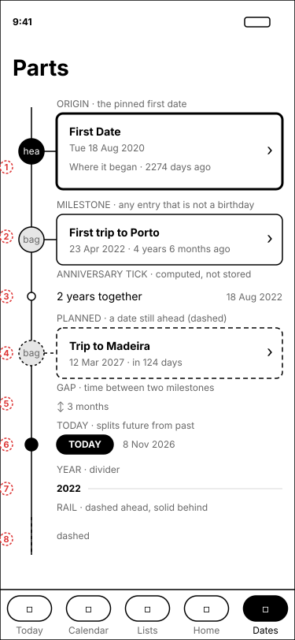
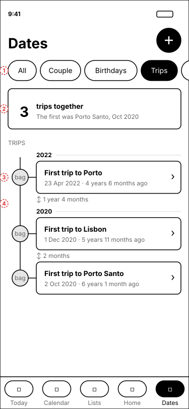
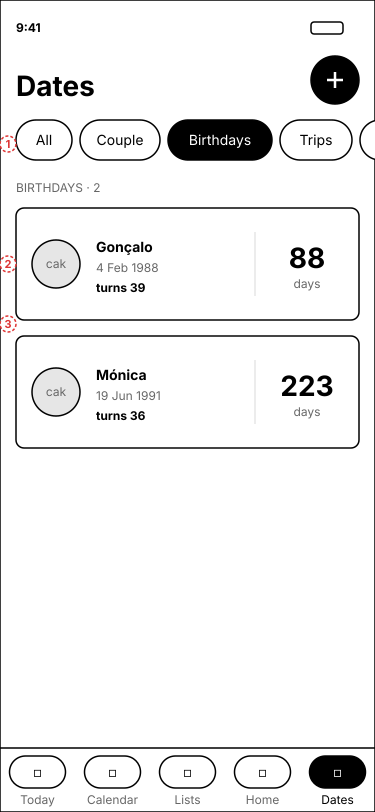

Today the tab is a list of countdowns, sorted by two different rules, with birthdays mixed in. It becomes one scrolling story: the day counter, then birthdays on their own, then a rail that runs from today back to the first date. The sample data is your real prod data.
5 screensLo-fi · monochromeMobile 375×812Tap any wireframe to zoom
Flow
One screen, scrolled. Birthdays move to a strip at the top and to their own list under the Birthdays chip. Everything else lives on the rail.

1 · Top of the screen
The first screenful answers "where are we" and "what's next" before any scrolling.

1Header and plus button are unchanged, so the add flow from the dates redesign still applies.
2The same filter chips as today. Each one filters the rail (see screens 4 and 5).
3The day counter stays, and gains the elapsed time in years, months and days. This is the "how far we've come" line.
4A progress bar shows how far through the current year of the relationship you are, with the next anniversary named underneath.
5Birthdays get a compact strip of two cards, each with the age they are turning and the days left. More than two scroll sideways.
6The rail starts in the future: the next anniversary, with a dashed node and a dashed rail above Today.
7The Today marker splits future from past. The rail turns solid below it.
8Anniversary ticks, one per year, under a year divider. They are small on purpose, so milestones stay the loudest thing on the rail.
Why: the old screen led with a three-row cluster of birthdays and the anniversary, then past events in a different order. Now the page reads top to bottom as "next, now, then, before".
2 · Scrolled to the origin
Newest at the top, so the story reads backwards in time and ends where it began.

1An anniversary tick sits in its year, between the milestones around it.
2Milestones are cards on the rail. The node carries the type icon you already have. Tapping opens the existing detail screen, unchanged.
3The gap between two milestones is written on the rail ("1 week", "3 months"). This is what turns a list into a trajectory.
4"1 year together" is the first tick. A gap is not shown across a tick, because the tick already marks the time.
5Trips and "other" dates share one card style. The icon tells them apart.
6The origin is the pinned First Date: a filled node and a taller card with a heavier border. It closes the story.
Why: six years in, the trip to Porto Santo and the move-in are "when" and "how long after". Gaps make that visible without counting.
3 · Parts
Every element the rail is built from, so the build is a handful of components.

1Origin. The pinned date. If nothing is pinned, the oldest couple date takes this role.
2Milestone. Any stored date that is not a birthday. Past ones show "x ago".
3Anniversary tick. Computed from the origin, one per year, never stored, not tappable.
4Planned. A stored date that is still ahead: dashed card and node, "in 124 days". The Madeira trip here is invented, to show the state. Your data has none yet.
5Gap. Duration between two adjacent milestones, in the largest sensible unit.
6Today. Always present. The rail is dashed above it and solid below.
7Year divider. A label and a hairline.
8Rail. Dashed means "not yet", solid means "has happened".
4 · Filter: Trips
A filter keeps the rail but drops the hero, the birthdays strip, the ticks and the Today marker.

1Trips chip active. Couple and Other work the same way.
2A one-line summary replaces the hero: how many, and which came first.
3Same milestone cards and year dividers.
4Gaps are measured between the trips shown, so "1 year 4 months" here spans the move-in that the filter hides.
5 · Filter: Birthdays
Birthdays are about the next time, not the past, so this is a list and not a rail.

1Birthdays chip active.
2Name, birth date and the age they turn, with the countdown as the big number on the right.
3Sorted by next occurrence, so the soonest is always first. Birthdays of friends and family sit here too, once the third-party types ship.
Rules
Element
Where it comes from
Shown when
Hero
The pinned date, or the oldest couple date
All and Couple filters
Birthdays strip
Dates of birthday type, by next occurrence
All filter only
Milestone cards
Every other stored date
All, plus the matching filter
Anniversary ticks
Computed from the origin date, one per year up to the next
All and Couple filters
Gaps
Computed between adjacent milestones
Always, except across a tick
Planned (dashed)
Stored one-off dates with a future date
Always above Today
Open questions
1Ticks: with many years, the rail gets long. Should ticks beyond the fifth collapse into "Years 6 to 10"? Not needed at 6 years.
2Recurring non-birthday dates (a recurring "Other" date) are ticks or cards? These wireframes treat only the first-date anniversary as ticks.
3Does the Today tab's "Us" strip want the same next-anniversary line as the hero?